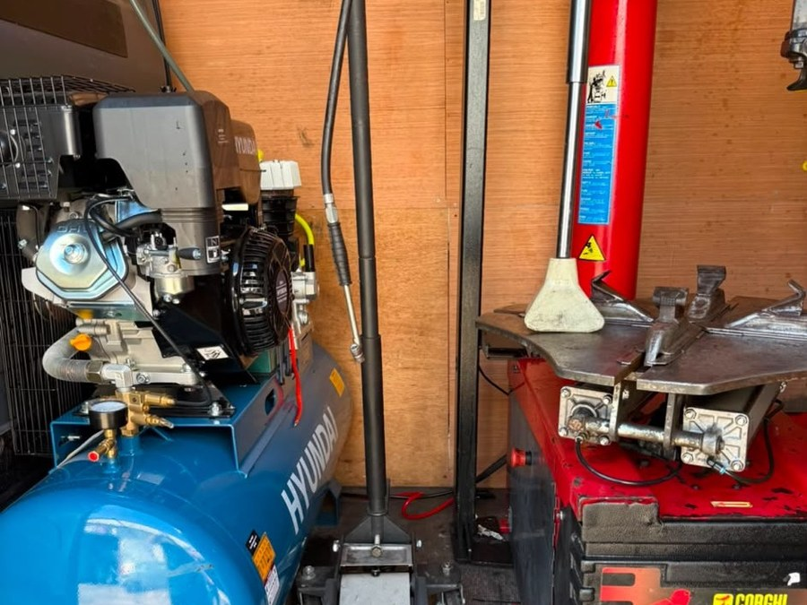

Flat tyre, blowout, or just need new tyres fitted without the trip to a garage? Our mobile fitters come to you — home, work, or roadside — anywhere in the UK.
Tell us a bit about your vehicle and we'll call or WhatsApp you back with a price — usually within minutes during working hours.
Stay exactly where you are — at home, at work, or wherever you've stopped. We bring the workshop to you.
Driveway, office car park, or roadside — our fitters carry everything needed to work safely on the spot.
Punctures, blowouts, worn tyres, and full-set replacements or seasonal changeovers.
You'll know the price before we start work — no surprise callout fees once we've arrived.
A quick guide to what we'll be checking when we arrive — not sure? We'll always give you a straight assessment on site.
Tread damage, within limits
Damage beyond safe repair
This is a general guide, not a substitute for an in-person check — tyre condition depends on more than size of damage alone. We'll always assess your tyre on site and explain exactly why we'd repair or replace it, before doing any work.
Call us for a flat tyre, a slow puncture that's become urgent, a blowout, seasonal tyre changeovers, or if you're not confident changing a tyre yourself — especially on a hard shoulder or narrow road where it isn't safe to do so alone.
Blown a tyre on a motorway? We provide nationwide motorway breakdown callouts across the UK with a target response time of within 45 minutes, subject to traffic, location and availability. See our motorway callout service →
Use the form above, call, or WhatsApp — whichever's easiest. Don't know your tyre size? We'll help you find it.
You'll get a straight answer on cost and when we can get to you, before anything's booked in.
Our fitter comes to your location and gets you back on the road safely.
Real photos from real callouts — this section updates as we complete more jobs.

You tell us your registration or tyre size and location, we confirm the price and timing, then a fitter comes to you — home, work, or roadside — and fits the tyre on the spot.
We carry a wide range of common sizes and can source less common ones ahead of your appointment. Let us know your reg or tyre size when you contact us and we'll confirm availability.
For motorway breakdowns we prioritise getting you off the hard shoulder safely first. See our nationwide motorway breakdown callout service for response times.
Pricing depends on your tyre size, location and the tyre chosen. We always confirm the price with you before any work starts — no surprise fees.
We offer nationwide mobile tyre fitting across the UK, with core stations in Manchester, London, Birmingham, Coventry, Leeds, Luton and Bradford. See our full coverage →
Yes — responsible disposal of your old tyre is included when we fit a replacement.
Call or message us — we'll get help moving toward you straight away.